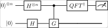

<!DOCTYPE html>
<html xmlns="http://www.w3.org/1999/xhtml">
<head>
  <meta charset="utf-8" />
  <meta name="generator" content="pandoc 3.10.2" />
  <meta name="viewport" content="width=device-width, initial-scale=1.0, user-scalable=yes" />
  <meta name="author" content="QuoNic" />
  <title>quantum_counting</title>
  <style>
    /* Default styles provided by pandoc.
    ** See https://pandoc.org/MANUAL.html#variables-for-html for config info.
    */
    html {
      color: #1a1a1a;
      background-color: #fdfdfd;
    }
    body {
      margin: 0 auto;
      max-width: 36em;
      padding-left: 50px;
      padding-right: 50px;
      padding-top: 50px;
      padding-bottom: 50px;
      hyphens: auto;
      overflow-wrap: break-word;
      text-rendering: optimizeLegibility;
      font-kerning: normal;
    }
    @media (max-width: 600px) {
      body {
        font-size: 0.9em;
        padding: 12px;
      }
      h1 {
        font-size: 1.8em;
      }
    }
    @media print {
      html {
        background-color: white;
      }
      body {
        background-color: transparent;
        color: black;
      }
      p, h2, h3 {
        orphans: 3;
        widows: 3;
      }
      h2, h3, h4 {
        page-break-after: avoid;
      }
    }
    p {
      margin: 1em 0;
    }
    a {
      color: #1a1a1a;
    }
    a:visited {
      color: #1a1a1a;
    }
    img {
      max-width: 100%;
    }
    svg {
      height: auto;
      max-width: 100%;
    }
    h1, h2, h3, h4, h5, h6 {
      margin-top: 1.4em;
    }
    h5, h6 {
      font-size: 1em;
      font-style: italic;
    }
    h6 {
      font-weight: normal;
    }
    ol, ul {
      padding-left: 1.7em;
      margin-top: 1em;
    }
    li > ol, li > ul {
      margin-top: 0;
    }
    blockquote {
      margin: 1em 0 1em 1.7em;
      padding-left: 1em;
      border-left: 2px solid #e6e6e6;
      color: #606060;
    }
    code {
      white-space: pre-wrap;
      font-family: Menlo, Monaco, Consolas, 'Lucida Console', monospace;
      font-size: 85%;
      margin: 0;
      hyphens: manual;
    }
    pre {
      margin: 1em 0;
      overflow: auto;
    }
    pre code {
      padding: 0;
      overflow: visible;
      overflow-wrap: normal;
    }
    .sourceCode {
     background-color: transparent;
     overflow: visible;
    }
    hr {
      border: none;
      border-top: 1px solid #1a1a1a;
      height: 1px;
      margin: 1em 0;
    }
    table {
      margin: 1em 0;
      border-collapse: collapse;
      width: 100%;
      overflow-x: auto;
      display: block;
      font-variant-numeric: lining-nums tabular-nums;
    }
    table caption {
      margin-bottom: 0.75em;
    }
    tbody {
      margin-top: 0.5em;
      border-top: 1px solid #1a1a1a;
      border-bottom: 1px solid #1a1a1a;
    }
    th {
      border-top: 1px solid #1a1a1a;
      padding: 0.25em 0.5em 0.25em 0.5em;
    }
    td {
      padding: 0.125em 0.5em 0.25em 0.5em;
    }
    header {
      margin-bottom: 4em;
      text-align: center;
    }
    #TOC li {
      list-style: none;
    }
    #TOC ul {
      padding-left: 1.3em;
    }
    #TOC > ul {
      padding-left: 0;
    }
    #TOC a:not(:hover) {
      text-decoration: none;
    }
    span.smallcaps{font-variant: small-caps;}
    div.columns{display: flex; gap: 1.5em;}
    div.column{flex: auto;}
    @media screen {
    div.columns{gap: min(4vw, 1.5em);}
    div.column{overflow-x: auto;}
    }
    div.hanging-indent{margin-left: 1.5em; text-indent: -1.5em;}
    /* The extra [class] is a hack that increases specificity enough to
       override a similar rule in reveal.js */
    ul.task-list[class]{list-style: none;}
    ul.task-list li input[type="checkbox"] {
      font-size: inherit;
      width: 0.8em;
      margin: 0 0.8em 0.2em -1.6em;
      vertical-align: middle;
    }
  </style>
  <script defer="" src="" type="text/javascript"></script>
</head>
<body>
<header id="title-block-header">
<h1 class="title">quantum_counting</h1>
<p class="author">QuoNic</p>
</header>
<div class="center">
<p><strong>Algorithms / 算法</strong> | 难度：中级 | 预计时间：15
分钟</p>
</div>
<h1 id="为什么需要">为什么需要？</h1>
<p>量子计数用于计算满足条件的解的数量，是 Grover 搜索的推广。</p>
<h2 id="经典局限">经典局限</h2>
<p>̱</p>
<ul>
<li><p>经典计数需要遍历所有元素</p></li>
<li><p>对于 <span class="math inline">\(N\)</span> 个元素，经典需要
<span class="math inline">\(O(N)\)</span> 次查询</p></li>
</ul>
<h2 id="量子优势">量子优势</h2>
<p>̱</p>
<ul>
<li><p>量子计数只需要 <span class="math inline">\(O(\sqrt{N})\)</span>
次查询</p></li>
<li><p>可以估计解的数量而不需要找到解</p></li>
<li><p>是量子算法设计的重要工具</p></li>
</ul>
<h2 id="实际应用">实际应用</h2>
<p>̱</p>
<ul>
<li><p>数据库计数</p></li>
<li><p>优化问题（估计解空间大小）</p></li>
<li><p>量子算法设计</p></li>
</ul>
<h1 id="快速上手">快速上手</h1>
<pre style="python"><code>from quonic.algorithms import quantum_counting

# Count solutions in 2-qubit space
result = quantum_counting(n_qubits=2, n_solutions=1)
print(f&quot;Estimated count: {result.count}&quot;)</code></pre>
<p><strong>预期输出</strong>：</p>
<pre><code>Estimated count: 1</code></pre>
<h1 id="原理详解">原理详解</h1>
<h2 id="电路图">电路图</h2>
<div class="center">
<p></p>
</div>
<h2 id="数学推导">数学推导</h2>
<p>量子计数结合了 Grover 搜索和量子相位估计： <span
class="math display">\[\begin{equation}
G = (2|s\rangle\langle s| - I)O
\end{equation}\]</span></p>
<p>其中 <span class="math inline">\(O\)</span> 是 Oracle，<span
class="math inline">\(|s\rangle\)</span> 是均匀叠加态。</p>
<p>通过 QPE 估计 <span class="math inline">\(G\)</span>
的本征值，可以推算出解的数量： <span
class="math display">\[\begin{equation}
M = N \sin^2(\theta/2)
\end{equation}\]</span></p>
<h2 id="几何解释">几何解释</h2>
<p>量子计数在 Bloch 球上估计 Grover
算子的旋转角度，从而推算解的数量。</p>
<h1 id="代码详解">代码详解</h1>
<pre style="python"><code>from quonic.algorithms import quantum_counting

# quantum_counting(n_qubits, n_solutions)
# n_qubits: number of qubits
# n_solutions: actual number of solutions (for verification)
result = quantum_counting(n_qubits=2, n_solutions=1)

# result.count: estimated number of solutions
# result.phase: estimated phase
print(f&quot;Count: {result.count}&quot;)</code></pre>
<h1 id="进阶用法">进阶用法</h1>
<h2 id="场景-1不同解数量">场景 1：不同解数量</h2>
<pre style="python"><code># Count different numbers of solutions
for n in range(1, 5):
    result = quantum_counting(n_qubits=3, n_solutions=n)
    print(f&quot;Actual: {n}, Estimated: {result.count}&quot;)</code></pre>
<h1 id="适用场景">适用场景</h1>
<h2 id="数据库计数">数据库计数</h2>
<p>量子计数可以高效计算满足条件的记录数量。</p>
<h2 id="优化问题">优化问题</h2>
<p>量子计数可以估计解空间的大小。</p>
<h1 id="常见问题">常见问题</h1>
<h2 id="量子计数和-grover-搜索有什么区别">量子计数和 Grover
搜索有什么区别？</h2>
<p>Grover 搜索找到一个解，量子计数估计解的数量。</p>
<h2 id="量子计数的精度如何">量子计数的精度如何？</h2>
<p>精度取决于控制量子比特的数量。更多的控制量子比特提供更高的精度。</p>
<h1 id="学习路径">学习路径</h1>
<h2 id="前置知识">前置知识</h2>
<p>̱</p>
<ul>
<li><p>Grover 搜索</p></li>
<li><p>量子相位估计（QPE）</p></li>
<li><p>量子傅里叶变换（QFT）</p></li>
</ul>
<h2 id="继续学习">继续学习</h2>
<p>̱</p>
<ul>
<li><p>振幅放大</p></li>
<li><p>量子优化</p></li>
<li><p>量子机器学习</p></li>
</ul>
<h1 id="完整示例代码">完整示例代码</h1>
<h2 id="示例-1基本量子计数">示例 1：基本量子计数</h2>
<pre style="python"><code>from quonic.algorithms import quantum_counting

result = quantum_counting(n_qubits=2, n_solutions=1)
print(f&quot;Count: {result.count}&quot;)</code></pre>
<p> </p>
<h1 id="下载">下载</h1>
<p></p>
<ul>
<li><p>(https://github.com/ChrisLee0721/QuoNic/blob/main/examples/quantum_counting/quantum_counting.py)</p></li>
</ul>
</body>
</html>
